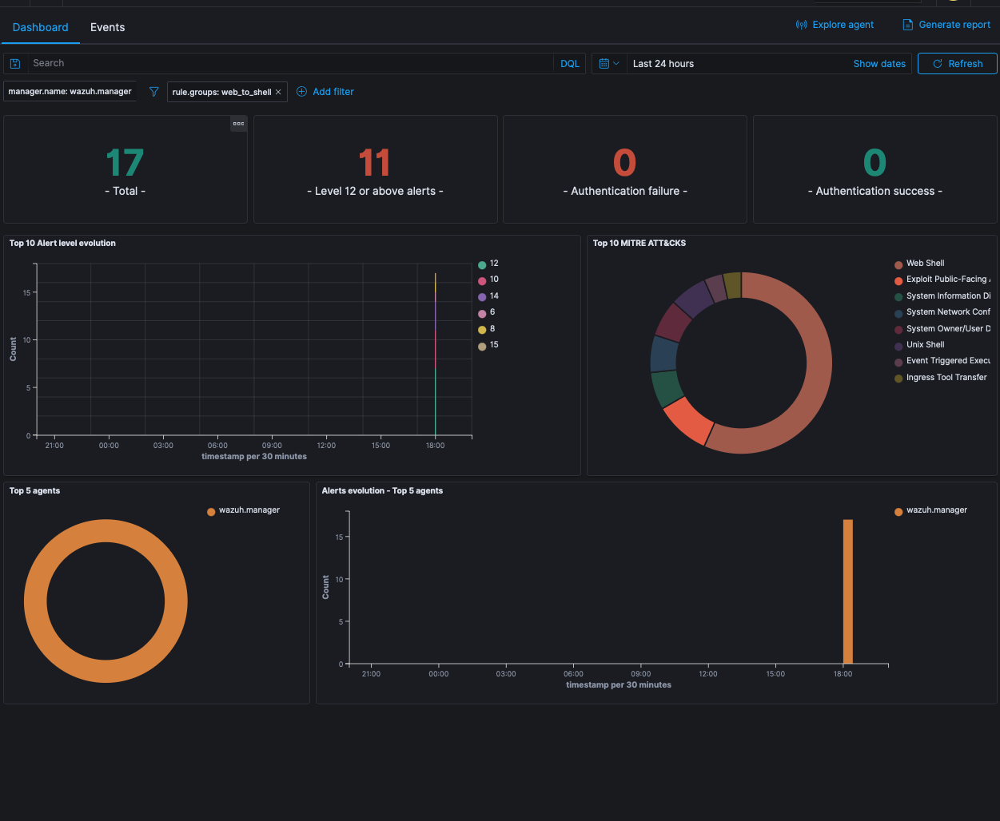
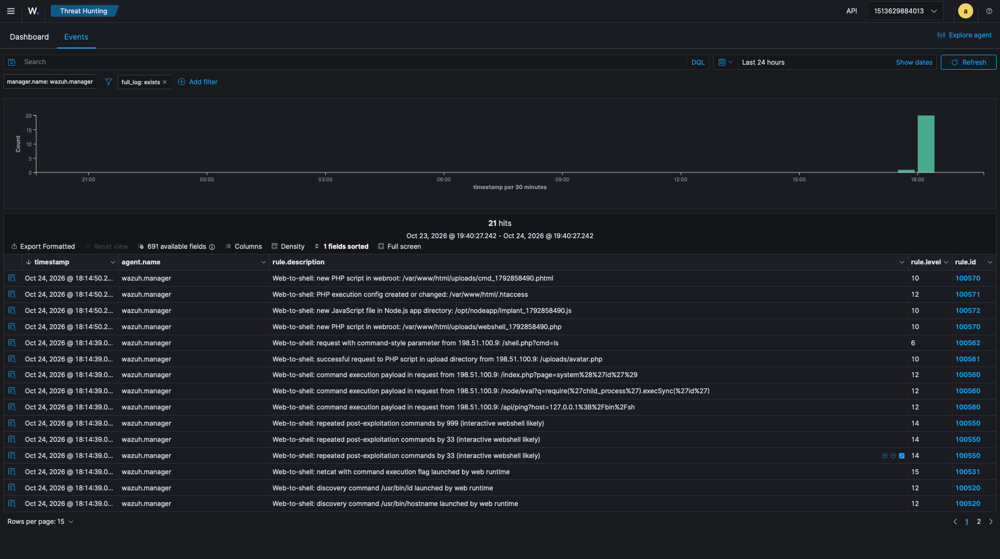
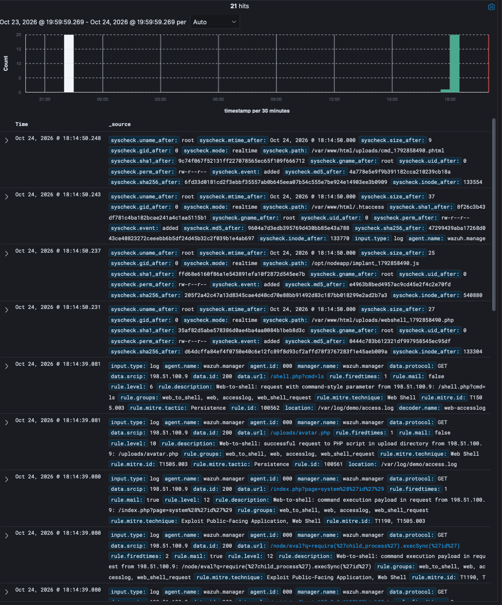

Catching the moment a web app becomes a shell
A validated three-layer Wazuh detection for PHP & Node.js — webshells, command injection, and the post-exploitation step every RCE has in common.

Most web compromises, whatever the entry point, converge on one move: the web application starts running operating-system commands. A classic PHP webshell does it. An OS command injection in a Node.js app does it. So does a deserialization or server-side RCE such as React2Shell (CVE-2025-55182), the unauthenticated RCE in React Server Components disclosed in December 2025. To be precise about scope: this detection does not recognise that vulnerability, or any other. It catches what an attacker does after exploiting it, when the Node.js process starts running commands. That is the point. The vulnerability of the week changes; the thing it does next rarely does.
That gives defenders a durable chokepoint. A PHP-FPM worker or a Node.js server rarely has a legitimate reason to run id, curl, or /bin/sh. When it does, something is usually wrong.
Wazuh already has good material on this. The January 2023 post Web shell attack detection with Wazuh catches PHP and ASP.NET webshells with FIM, auditd execve logging for the Apache user, Sysmon on IIS, and command monitoring. The proof-of-concept guide covers related web attacks such as Shellshock and SQL injection. That guidance is the foundation here. The default ruleset itself does not include a ready-made rule for “a web runtime spawned a process”. This pack packages one and adds:
- Node.js coverage next to PHP, keyed on a dedicated service account.
- Tiered severity by what the spawned process does, not one flat alert.
- Hex-aware matching of auditd arguments (more on that below).
- Correlation of repeated commands into an “interactive webshell” alert.
- A test suite that runs every case through a live Wazuh
logtestengine.
The core idea: the service account is the signal
The cleanest signal is process lineage — “php-fpm spawned bash.” Linux’s audit subsystem (auditd) gets you part of the way: the SYSCALL record for each execve() carries the new process’s pid, comm and exe, and its parent’s PID (ppid). What it does not carry is the parent’s name. To learn that ppid=812 was php-fpm, you would have to join it back to an earlier event for PID 812, and Wazuh’s rule engine cannot easily do that join across events. So the practical choice is to key on the account the runtime runs as, treating it as a proxy for “this came from the web app.”
That works cleanly as long as each runtime has its own identity:
- PHP-FPM and Apache already run as
www-data(orapache/nginx). Good. - Node.js, by convention, often runs as root or a developer’s login user. That ruins the signal. Run your Node app under a dedicated service account. It is good hygiene regardless, and it is what makes this detection precise.
With that in place, the audit rules are short. They log every program execution by the web accounts, on both syscall tables and both entry points, so an attacker can’t slip past by calling the 32-bit table or execveat instead of execve:
-a always,exit -F arch=b64 -S execve -S execveat -F euid=www-data -k web_exec_php
-a always,exit -F arch=b32 -S execve -S execveat -F euid=www-data -k web_exec_php
-a always,exit -F arch=b64 -S execve -S execveat -F euid=nodeapp -k web_exec_node
-a always,exit -F arch=b32 -S execve -S execveat -F euid=nodeapp -k web_exec_nodeThree layers
Process execution is the heart of it, but two more layers add context and catch the attack earlier or later in its lifecycle.
Layer 1 — process execution (auditd). The tiered rules escalate with intent:
| Behaviour | Example | Level |
|---|---|---|
| Known-good shell spawn | PHP mail() → sendmail -t -i | 3 |
| Shell spawned | sh -c '…' | 8 |
| Interpreter running a script | php cron.php, python3 job.py | 10 |
| Inline interpreter code | python -c, perl -e, php -r, node -e | 12 |
| Discovery | id, whoami, uname | 12 |
| Download / transfer | curl, wget, scp | 12 |
| Reverse shell | /dev/tcp, mkfifo, nc -e | 15 |
Interpreters are split in two on purpose. Inline code (python -c, perl -e) is how an attacker runs a payload without dropping a file, so it ranks with discovery and downloads at 12. An interpreter running a script file is level 10. That rule matches on the binary alone, and the binary alone also covers plenty of legitimate work: PHP CLI scripts, php artisan, cron jobs.
And a correlation rule: three post-exploitation commands from the same web account within two minutes is almost certainly someone typing into a webshell — that escalates to level 14 on its own.
Layer 2 — web access logs. Before the shell ever spawns, the request often carries the payload: ?page=system('id'), /bin/sh in a parameter, require('child_process') in a query string, or a hit on a freshly uploaded .php in an uploads/ directory. These fire off the stock web-accesslog decoder. Treat this layer as an early-warning bonus, not as coverage, because it has two hard limits:
- Access logs record only the request line. nginx and Apache do not log POST bodies, and most real webshell traffic is a POST. A
POST /uploads/x.phpwith the command in the body shows up only as a request to a PHP file in an upload directory. Layer 1 still sees the command when it runs. - Payloads are usually encoded. The rules match the common URL-encoded forms (
system%28,%2Fbin%2Fsh, double-encoded%2528), but a fully percent-encoded or base64 payload will get past any plaintext pattern.
These rules also overlap with Wazuh’s stock web-attack rules in the 31100 range. Stock rule 31104 already flags URLs containing wget%, cd%20, exec%20, %0A and similar, and 31106 escalates those when the response is a 200. The pack chains off 31104 and 31106 as well as 31100 and 31108, so a request both rule sets match is raised to the more specific web-to-shell alert instead of being claimed by the stock rule. The test suite has a case that fails without this.
Layer 3 — file integrity monitoring. The webshell has to land somewhere. Real-time FIM on the webroot flags new .php/.phtml/.phar files, new .js in the Node app directory, and tampering with .htaccess or .user.ini (a common trick to make PHP execute innocuous-looking file types).
Everything is mapped to MITRE ATT&CK — T1505.003 (Web Shell), T1059.004 (Unix Shell), T1190 (Exploit Public-Facing Application), and friends.

Legitimate shell spawns: tune before you trust the level-8 rule
“A web runtime almost never runs a shell” holds for many apps, but not all of them. Known legitimate cases:
- PHP
mail(). PHP sends mail by runningsendmail_paththrough/bin/sh -c, so every contact form, password reset, and WordPress notification spawns a shell. That alone would make the level-8 rule noisy on any CMS, so the pack ships rule 100511. It drops the default/usr/sbin/sendmail -t -icall, with or without a-f<sender>, to level 3. The match covers the whole argument, sosendmail -t -i;idstill alerts. - Image and document processing. ImageMagick delegates (such as Ghostscript for PDFs) and wkhtmltopdf run as child processes.
- Git-based deploy hooks. A webhook endpoint that runs
git pullspawnssh,gitandssh. - Composer, when it runs as the web user.
- Cron-driven PHP scripts scheduled in the web user’s crontab. Those run as
www-datatoo, so they trigger the interpreter rule. On Debian and Ubuntu, cron sets the audit login UID (auid) and PHP-FPM workers have it unset (4294967295). That difference is a good field to tune on.
Silence each one with a narrow child rule of 100510 that matches the exact binary or argument. Don’t widen the parent rule. The README has a template.
The part most rule packs skip: proving it works
It is easy to write XML that looks like a detection. It is harder to know it fires on what you intend and stays quiet on what you don’t. I built the ruleset against a throwaway wazuh/wazuh-manager container and drove 42 cases through the live logtest engine — the real analysis pipeline, not a mock.
Three things only surfaced because of that.
auditd hex-encoding. auditd writes a command argument as a quoted string only when it is printable with no spaces or quotes; otherwise it writes it as uppercase hex. So a reverse shell like sh -c "bash -i >& /dev/tcp/…" arrives on the wire as a2=62617368202D69…. A rule matching the plaintext /dev/tcp would miss the real event entirely. The generator in the test suite encodes arguments exactly as the daemon does, which forced the rules to match both forms — and caught the bug before deployment, not after.
Stock rules get there first. Wazuh’s built-in 0850-audit_rules.xml already claims python, scp, ps aux, and lscpu audit events. The stock web rules 31104 and 31106 do the same for some access-log payloads. My rules were shadowed in both places until I chained them off those stock IDs via if_sid.
FIM restrict is not a regular expression. Wazuh has more than one pattern syntax. Rules and decoders use OS_Regex by default, where a plain . is a literal dot and \. means any character. PCRE2 is available with type="pcre2". The syscheck restrict attribute uses neither: the syscheck reference lists it as sregex (OS_Match), a simple matcher with ^, $ and | anchors and no escapes at all. I checked this on a 4.14.8 manager by dropping the same four files into three monitored directories:
restrict | shell.php | shellXphp | file named x\.php |
|---|---|---|---|
.php$ | alert | — | alert |
\.php$ | — | — | alert |
| (none) | alert | alert | alert |
.php$ matches a literal dot, and \.php$ looks for a real backslash in the file name. So writing the regex-style \.php$ quietly turns off the FIM layer for normal files. That is documented behaviour, not a bug, but it is easy to miss when the neighbouring rule files use different syntaxes. The shipped config uses the documented form and says why in a comment.

rule.mitre.id, rule.mitre.tactic, decoder.name, and the syscheck sha256 of each dropped webshell.The false-positive guards matter too. rsync -e ssh contains -e; ssh -i contains -i. Neither is a reverse shell, and the tests assert they classify as an ordinary shell spawn, not a critical alert. PHP activity and Node activity are also checked never to cross-correlate into a false webshell alert, and a sendmail call with a command tacked on must not be mistaken for the known-good mail() call.
Final result: 42/42, reproducible with one command (./tests/run.sh), against a clean container, in about a minute.
Try it
The repo includes a self-contained lab — a deliberately vulnerable PHP app and Node app behind nginx, a one-command victim setup, and a benign trigger script that lights up each rule using only loopback-scoped commands.
⚠️ Warning: the lab is exploitable by design. It ships working command injection and unrestricted file upload. Run it only on a throwaway VM in an isolated network (host-only or a dedicated lab VLAN). Never make it internet-facing, and never enrol it on a Wazuh manager that also serves production agents. Use a separate lab manager, so lab alerts and anything the victim gets up to stay out of your real environment.
Stand it up that way, point the agent at your lab manager, and watch rule.groups:web_to_shell populate.
Validated on Wazuh 4.14.8; stock decoders only, so it should hold across the 4.x line.
If you run a web stack on Wazuh, this is a high-value detection to add once you have tuned it for your apps. It is also a template for a broader principle: find the behaviour the attacker can’t avoid, key on it, and prove your rule before you trust it.
Get the code
Ruleset, auditd rules, agent config, the Docker lab, the 42-case test suite, and a step-by-step install guide — all open source.
github.com/SAMsploit1/shellcatch ↗